¿Quiénes somos?
El equipo detrás del CER — Centro de Estudios Estratégicos Renovación
Nuestro Equipo
Coordinación e investigadores
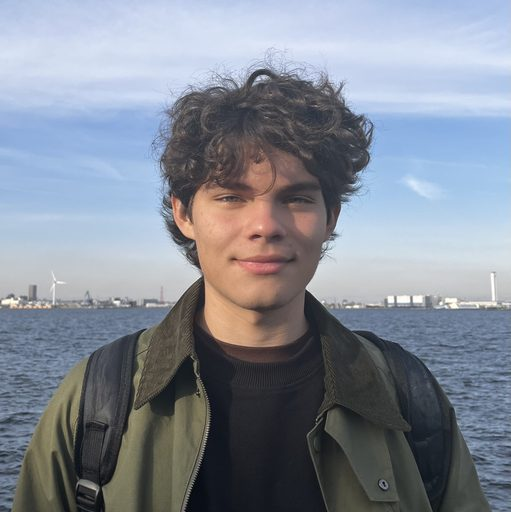
Victor Orsingher
Coordinador General
Estudiante de Ciencias Biológicas — UBA
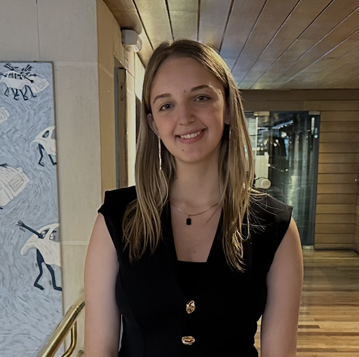
Azul Pousada
Coordinadora del CEEIR
Estudiante de Relaciones Internacionales — UADE
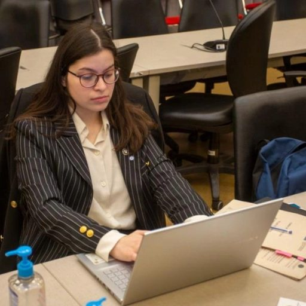
Camila Yñiguez Quintana
Coordinadora de OPSA
Estudiante de Ciencia Política y Gobierno — UTDT
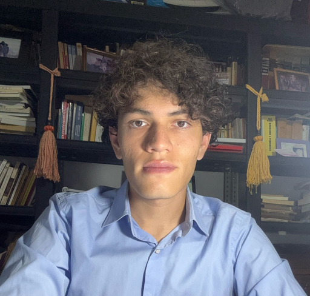
Estanislao Palavecino
Responsable de planificación
Estudiante de Relaciones Internacionales y Ciencia Política — UP
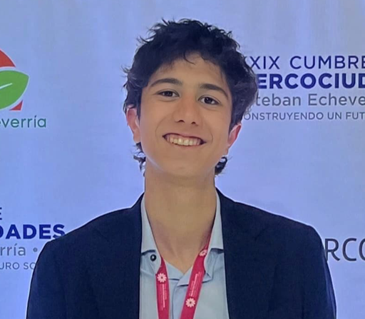
Nicolás Albornoz
Responsable de comunicación
Estudiante de Relaciones Internacionales — UNSAM
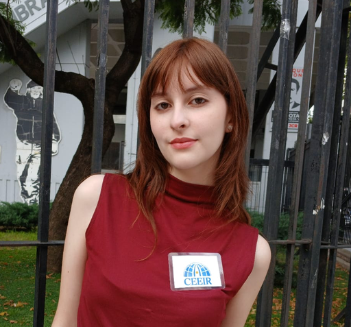
Camila Pugnaire
Responsable de organización
Estudiante — UNLP
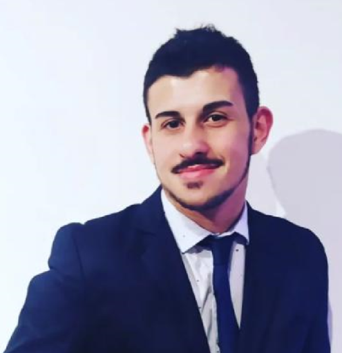
Facundo Yedid
Analista principal de investigaciones geopolíticas
Estudiante de Relaciones Internacionales — UNSAM
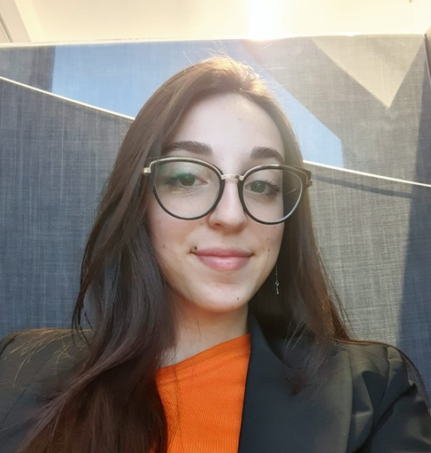
Bianca Caranti
Analista y redactora
Estudiante de Gobierno y Relaciones Internacionales — UADE
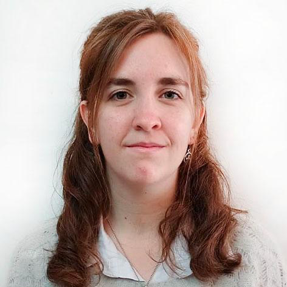
Paulina Zani Oribe
Analista y redactora
Estudiante de Relaciones Internacionales — UADE
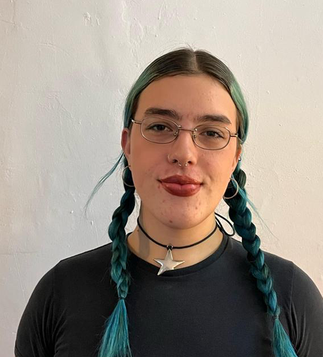
Juana Videla
Redactora y analista
Estudiante de Ciencias Políticas — UCA
Tomás Amigo
Redactor y analista
Estudiante — UCA La Plata
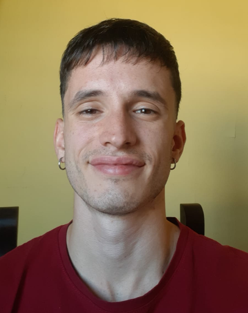
Tomás Ascat
Redactor y analista
Estudiante
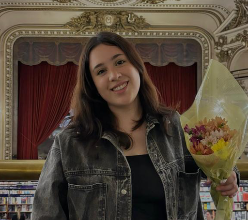
Selena Sequeira
Redactora y analista
Abogada — UBA
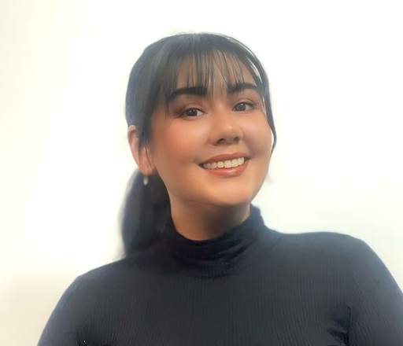
Karen Villagra
Redactora y analista
Estudiante de Relaciones Internacionales — UADE
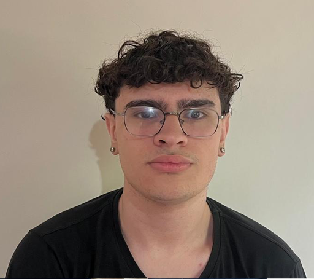
Emiliano Bustos
Redactor y analista
Técnico en Comunicación Social — UNER
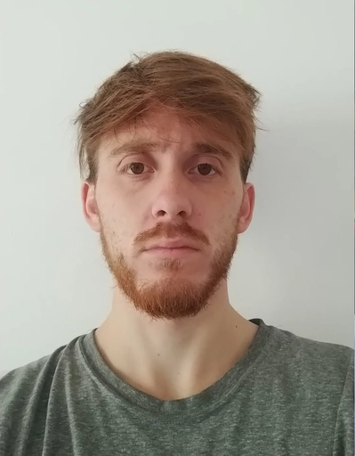
Nicolás Gómez
Redactor y analista
Estudiante de Relaciones Internacionales — UADE